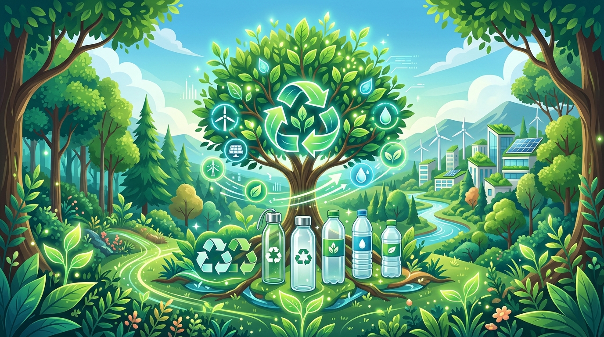
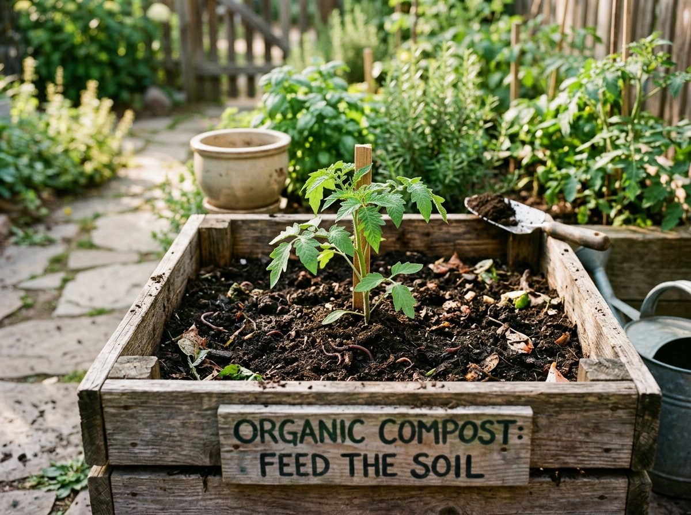
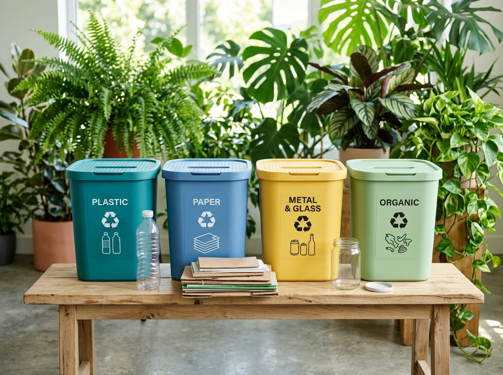

Daha Temiz Bir Dünya İçin
Geri Dönüştür, Yaşat!
Her gün ürettiğimiz atıkların doğada yok olma sürelerini öğrenin, doğru ayrıştırma yöntemleriyle ekolojik ayak izinizi küçültün ve doğaya kattığınız değeri hesaplayın.

17 Ağaç
1 Ton Kağıt Tasarrufu
%95 Enerji
Alüminyum Geri Dönüşümü
Plastik Şişenin Doğada Yok Olma Süresi
Cam Malzemenin Sonsuz Geri Dönüştürülebilirliği
Alüminyum Kutu Dönüşümü Enerji Tasarrufu
1 Litre Atık Yağın Kirletebileceği Su
Atık & Malzeme Rehberi
Evde veya işte karşılaştığınız ürünleri arayın, ne şekilde geri dönüştürüleceğini ve doğada ne kadar süre kaldığını anında öğrenin.
Eko-Hesaplayıcı: Doğaya Katkını Görmek İster misin?
Aylık geri dönüştürdüğün ortalama malzeme miktarlarını gir; kurtardığın ağaç, su ve sağladığın enerji tasarrufunu anında gör!
Geri Dönüşüm Efsaneleri ve Gerçekler
Kartların üzerine tıklayarak veya fareyle yaklaşarak geri dönüşüm hakkında doğru sanılan hataları keşfedin.
"Plastik üzerindeki her üçgen geri dönüştürülebilir demektir."
Detayı görmek için tıklayın
Üçgen içindeki 1'den 7'ye kadar olan rakamlar Reçine Kodudur (Plastiğin hammaddesini gösterir). 3 (PVC) ve 7 (Diğer) gibi bazı plastik türleri standart evsel geri dönüşüm tesislerinde işlenemeyebilir.
"Kutuları deterjan ve bol suyla gıcır gıcır yıkamalıyız."
Detayı görmek için tıklayın
Deterjanla yıkamak değerli tatlı su kaynaklarını israf eder! Kutuları sadece yemek artıklarından arındırmak veya çalkalamak yeterlidir. Aşırı yıkamaya gerek yoktur.
"Bütün cam parçalarını cam kumbarasına atabiliriz."
Detayı görmek için tıklayın
Pencere camı, borosilikat (Pyrex) ve aynaların erime sıcaklıkları farklıdır. Şişe ve kavanoz kumbaralarına atılırlarsa tüm geri dönüşüm serisini bozarlar!
"Atık yağlar sıcak suyla lavabodan dökülürse sorun olmaz."
Detayı görmek için tıklayın
Yağ soğuduğunda borularda taşlaşarak kanalizasyonları tıkar. 1 Litre atık yağ 1 milyon litre temiz suyu kirletir. Yağlar kavanozda biriktirilip bitkisel atık yağ noktalarına verilmelidir!
Geri Dönüşüm Bilgi Yarışması
5 soruda geri dönüşüm bilincini sınayın, puan kazanın ve "Eko-Kahraman" unvanını elde edin!
Sürdürülebilir Yaşam & Upcycling
Evsel atıkları azaltmanın, kompost yapmanın ve eski eşyalara yeni hayat vermenin kolay yolları.

Evde Kompost Nasıl Yapılır?
Meyve-sebze kabukları, çay posaları ve kurumuş yaprakları değerli bir organik gübreye dönüştürün. Çöp miktarınızı %40 azaltın!
- Yeşil Malzemeler: Sebze atıkları, taze çim, kahve telvesi.
- Kahverengi Malzemeler: Kuru yaprak, karton parçaları, dal.
- Konulmaması Gerekenler: Et, süt ürünleri, pişmiş yağlı yemekler.

Upcycling (İleri Dönüşüm) Nedir?
Atmak üzere olduğunuz eşyaları geri dönüştürme sürecine sokmadan, kendi yaratıcılığınızla daha değerli yeni nesnelere çevirin.
- Cam kavanozlardan şık mumluklar ve saksılar yapın.
- Eski kot pantolonlardan bez alışveriş torbaları dikin.
- Ahşap paletlerden bahçe mobilyaları tasarlayın.
Atık Toplama & Kumbara Rehberi
Geri dönüştürülebilir malzemelerinizi türüne göre doğru toplama noktalarına ulaştırın.